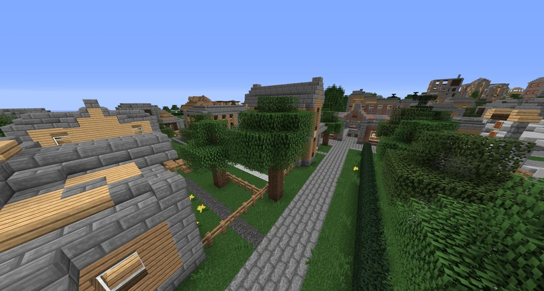

Broville Heights
A predominantly residential suburban area just outside the city of Broville.
Neighborhood profile
Broville Heights is a suburban area just outside Broville, recorded in the maps and station directory. Its housing consists largely of single-family houses and townhouses built close together. This density leaves residents with limited private outdoor space.
The community description contrasts its range of living conditions with the urban deterioration of Brompton.



Landmarks
The main landmarks are Broville Heights Outdoor Mall and Broville Heights Station. The open-air shopping center and the station provide reference points within this predominantly residential neighborhood.
See also
Sources and references
- v11.4.4 maps, signs, books and items World records
- Broville Heights · Broville Wiki Community archive
Text adapted and expanded from Broville Heights (contributors and history, revision 5081). Adapted text is available under CC BY-SA 3.0.